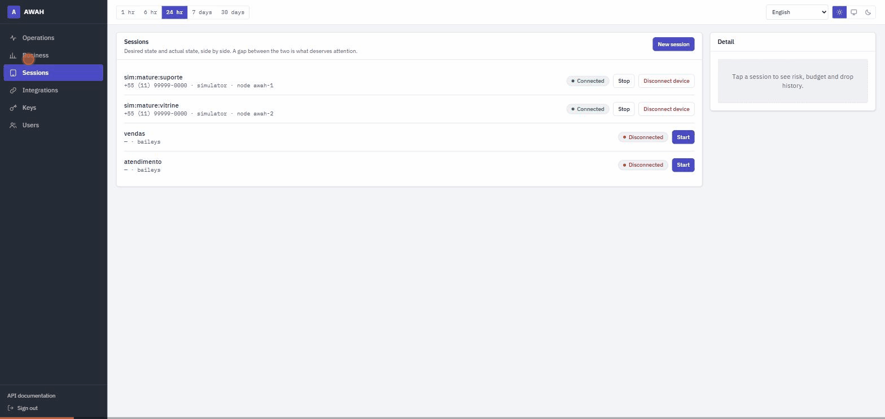
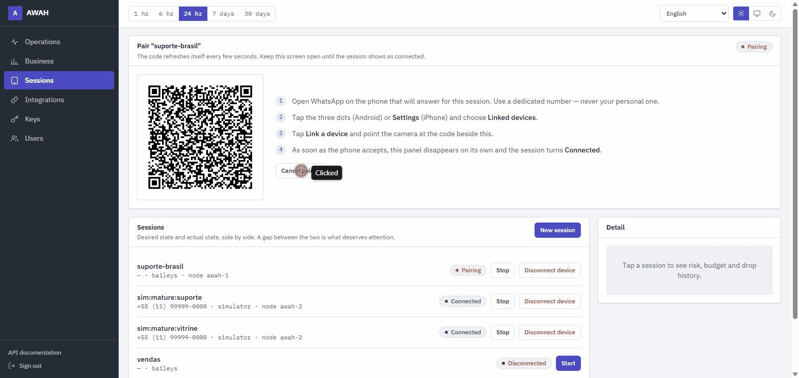

Ordem por conversa
Dentro de um chat, as mensagens saem na ordem em que entraram, e nunca há dois envios simultâneos para o mesmo destinatário. Chats diferentes correm em paralelo.
Open source · MIT · imagem Docker multi-arquitetura
A maioria dos gateways de WhatsApp resolve “como envio uma mensagem”. O AWAH existe para a segunda pergunta — a que aparece quando o volume chega: fila durável em Postgres, motor de risco que protege o número e sessões em cluster com failover automático.
Instância de verdade, com um mês de tráfego dentro — entre com
admin@awah.demo / admin, sem cadastro.
Só a engine é simulada: nada dali chega a um telefone.
“Como envio dez mil mensagens sem perder nenhuma, e sem perder o número?”
A fila é o produto. A API responde no instante em que a linha fica durável,
antes de qualquer I/O de rede — então um processo que morre não
perde nada. Isso não é uma promessa de README: é medido matando um processo
com SIGKILL no meio da drenagem.
O que acontece com uma mensagem
A parte que separa isto de um botão de enviar. Cada etapa registra sua decisão, e cada decisão continua consultável meses depois.
clientMessageId é a chave de idempotência: repetir o POST devolve o envio original.GET /v1/outbox?status=dead, pronta para replay.timestamp.body — não só o body. Uma entrega capturada não pode ser reenviada depois: mexer no timestamp invalida a assinatura.Dentro de um chat, as mensagens saem na ordem em que entraram, e nunca há dois envios simultâneos para o mesmo destinatário. Chats diferentes correm em paralelo.
A linha existe no banco antes de qualquer I/O de rede. Se o processo morre no meio, a mensagem sai depois.
Sessão caída, ou ainda pareando, devolve o envio à fila sem consumir tentativa. Só erro real de entrega conta.
Esgotadas as tentativas, a mensagem vai para a DLQ e continua consultável — com replay em um POST.
Motor de risco
Engine não oficial faz número ser banido. O motor impõe um ritmo humano — e o ritmo não é constante: ele abre conforme o número envelhece.
Percentual do limite configurado que o motor libera, por dia desde o pareamento.
| Dia | Teto liberado | Envios/min (teto de 12) |
|---|
Configurar 5.000 por dia numa sessão pareada hoje dá 250 na prática. Isso é deliberado: um número recém-pareado que dispara mil mensagens no dia um é o padrão de conta descartável mais óbvio que existe.
Quatro sinais, cada um com seu peso e seu motivo em texto claro.
| Sinal | Peso | Por quê |
|---|
GET /v1/risk/events guarda cada decisão com um retrato do orçamento
naquele instante — responde por que um envio específico atrasou, meses depois.
Quando o orçamento acaba, o envio volta para a fila carregando o horário em que a janela abre — calculado a partir do envio mais antigo ainda dentro dela. Nenhuma mensagem é jogada fora.
Um balde deixaria enviar o teto inteiro às 13h59 e o teto inteiro de novo às 14h00. A janela desliza.
Um teto separado, porque falar com muito desconhecido é o sinal de spam mais forte que o WhatsApp lê.
Medido, não afirmado
Os números abaixo saem de node scripts/benchmark.mjs, que está no
repositório e que você pode rodar de novo.
Fora de ordem dentro de uma conversa
0de 192 pares
Na primeira tentativa, sob concorrência.
Envios recusados recuperados
todos
Nenhum chegou à fila morta.
Ingestão pela API
~450envios/s
POST /v1/sessions/:id/messages
Warm-up: dia 0 · 3 · 30
1,2 · 2,4 · 14,4
Envios/min contra tetos de 1 · 2 · 12.
Um segundo script pergunta se as garantias se sustentam, e registra o que viu
em vez de só dizer se ficou satisfeito: uma chave de leitor recusada, um
webhook com assinatura recomputada a partir do corpo e do segredo, uma
entrega recusada duas vezes e aceita na terceira, sessenta mensagens
sobrevivendo a um docker kill no meio da drenagem e uma sessão
assumida pela réplica sobrevivente depois que a dona foi morta.
O script dirige o Docker de propósito: durabilidade e failover não se
verificam sem parar um processo — e parada graciosa é o caso fácil, então ele
usa SIGKILL.
O que ainda não foi medido
Isto já rodou contra números reais — quatro deles, cerca de 3.700 mensagens pela engine Baileys, com webhooks assinados o tempo todo e o motor de risco regulando o ritmo, sem nenhum número bloqueado. O que ainda falta é escala e tempo: quatro números e alguns milhares de mensagens dizem que o caminho funciona, não que ele aguenta dez vezes esse volume, nem como o WhatsApp trata um número ao longo de meses.
A mecânica tem 419 testes cobrindo. E um teste continua sendo um teste.
O painel
É o que permite a credencial do painel ser um cookie httpOnly em vez
de um token no localStorage. Em origens separadas o navegador exigiria
SameSite=None, e o cookie passaria a viajar em requisição de terceiro.


Estado é forma e cor: cada pílula carrega um ponto além do tom, porque daltonismo é comum e um painel que fala só em cor exclui parte de quem opera. Todo número em fonte monoespaçada com dígitos tabulares — uma coluna que não dança quando o valor muda.
desired_state=running que não está rodando.Como é montado
A posse é um lease no Redis. Quando a réplica dona morre, outra percebe e assume — o que também é checado matando uma.
Seu sistema
AWAH — N réplicas
Estado
Engines, um contrato
Os dois ficam atrás do mesmo EngineAdapter: quem integra escreve o
código uma vez e migra do não oficial para o oficial trocando uma linha.
baileys | cloud_api | |
|---|---|---|
| Pareamento por QR | sim | não — é um token |
| Grupos | sim | não |
| Presença de digitação | sim | não existe na API |
| Conversa livre | sempre | só dentro da janela de 24 h |
| Risco de ban | real | nenhum |
| Custo | zero | por conversa, cobrado pela Meta |
Integrações
O Chatwoot já resolve atendimento humano; o Typebot já resolve fluxos. O que falta a todos eles é exatamente o que o gateway tem.
| Ligado direto na Meta | Com o AWAH embaixo | |
|---|---|---|
| Ordem por conversa | sem garantia | FIFO por chat, chats em paralelo |
| Mensagem perdida | dispara e esquece | fila durável, retry, DLQ com replay |
| Ritmo de envio | o que a ferramenta decidir | orçamento, warm-up e freio adaptativo |
| Reentrega duplicada | manda de novo | idempotência por chave |
| Estado de entrega | “eu enviei” | funil enviada → entregue → lida |
Dois campos: endereço e token. O gateway descobre o resto — a conta, as inboxes — e cria a inbox de API já com o webhook apontado para ele mesmo. Os três passos que faziam a maioria desistir não existem mais.
Pede só o link de compartilhamento do fluxo. O endereço e o id saem dele.
O conector HTTP posta cada mensagem recebida na sua URL e envia de volta o que a resposta trouxer. Com isso n8n, Make, uma função serverless ou o sistema de casa viram o bot.
A conexão é testada antes de ser salva: credencial errada guardada em silêncio só apareceria na primeira mensagem de um cliente real.
Engines não oficiais (Baileys, whatsapp-web.js, whatsmeow) funcionam por engenharia reversa do protocolo e violam os termos de serviço do WhatsApp. O risco de banimento da conta é real e permanente.
cloud_api — o oficial da Meta, sem risco de ban, cobrado por conversa.Este projeto não é afiliado, associado nem endossado pelo WhatsApp ou pela Meta.
Começar
A imagem vem pronta do registro — multi-arquitetura, amd64 e arm64: roda igual num VPS barato, num Mac Apple Silicon ou num Raspberry Pi.
Sobe Postgres e Redis, aplica as migrações e inicia a API em http://localhost:2900.
Na primeira vez aparece a tela de setup, onde você cria a organização e seu usuário. Ela se fecha depois disso, e novos usuários entram por convite.
Três passos, todos no painel: pareie o número na aba Sessões, conecte a ferramenta em Integrações e acompanhe em Operações. A referência interativa de cada rota fica em /docs, com a instância no ar.
Construído sobre fetch e WebCrypto — roda em Node, Deno, Bun,
Cloudflare Workers e no navegador. Repete 408, 429,
5xx e falha de rede sozinho, e não repete os outros 4xx,
porque enviar de novo produz a mesma recusa.
Ele gera o clientMessageId quando você não passa um, e é
isso que torna a retentativa automática segura: sem chave de idempotência,
repetir um POST depois de um timeout de rede mandaria a mesma mensagem duas
vezes para o cliente final.
import { Awah } from '@awah/sdk'
const awah = new Awah({ baseUrl: 'https://awah.suaempresa.com', apiKey: process.env.AWAH_KEY! })
await awah.messages.sendText(sessionId, {
chatId: '5511987654321',
text: 'olá',
clientMessageId: 'pedido-4821',
})As doze ondas estão fechadas: fila, risco, cluster, telemetria, painel, engine oficial, SDK, conectores e imagem publicada. O que falta para a v1.0 não é código. Se você subir isto contra um número de verdade, o relato é a contribuição mais valiosa que existe agora.